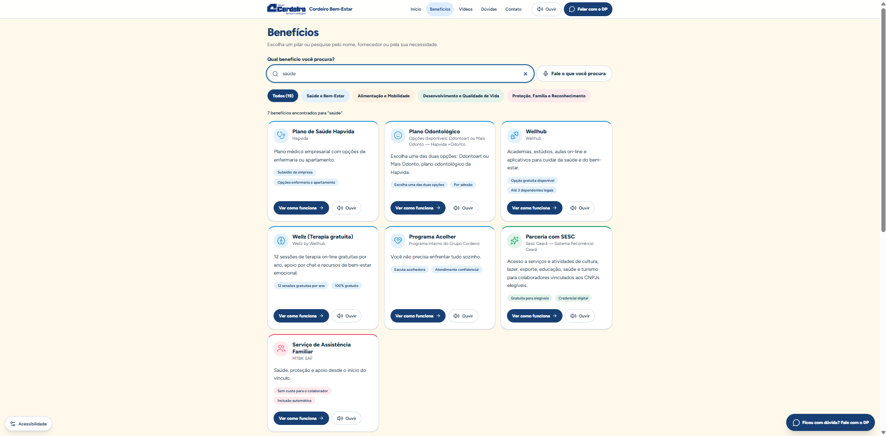

PROJETO EM DESTAQUE
Landing Page de Benefícios.
Uma solução digital desenvolvida para centralizar informações sobre benefícios e tornar a experiência dos colaboradores mais simples, acessível e intuitiva.

DESAFIO
Informações descentralizadas
O acesso às informações de benefícios dependia de diferentes canais, comunicações e documentos, dificultando a consulta rápida pelos colaboradores.
SOLUÇÃO
Tudo em um só lugar
Desenvolvi uma landing page para organizar benefícios, orientações, acessos e informações relevantes em uma experiência digital centralizada e de fácil utilização.
PRINCIPAIS ENTREGAS
Mais do que uma página de benefícios.
A solução foi pensada para facilitar a jornada do colaborador, reduzindo a necessidade de procurar informações em diferentes documentos, mensagens e canais.
Busca inteligente
O colaborador pode pesquisar diretamente pelo benefício ou necessidade que procura.
Benefícios por pilares
Os benefícios foram organizados em categorias para tornar a navegação mais simples e intuitiva.
Jornada por necessidade
A pessoa pode partir de situações reais, como cuidar da saúde, estudar ou entender seus benefícios.
Acessibilidade
A solução inclui recursos que ampliam a facilidade de acesso e compreensão das informações.
Canal com o DP
Quando a informação disponível não é suficiente, existe um direcionamento claro para atendimento.
Centralização
Informações sobre diferentes benefícios passam a estar disponíveis em uma única experiência digital.
COMO DESENVOLVI A SOLUÇÃO
Do problema de RH à experiência digital.
O desenvolvimento partiu de uma necessidade real: facilitar o acesso dos colaboradores às informações sobre benefícios. A partir disso, estruturei a solução em etapas, combinando conhecimento de RH, experiência do usuário e tecnologia.
Identificação da necessidade
O primeiro passo foi entender as principais dificuldades enfrentadas pelos colaboradores para localizar informações sobre benefícios, regras, acessos e canais de atendimento.
Estruturação dos benefícios
Organizei os conteúdos de forma mais simples, agrupando os benefícios por categorias e pensando em como as pessoas realmente procuram essas informações.
Desenho da jornada
A navegação foi pensada para permitir tanto a busca direta por um benefício quanto a descoberta da solução a partir de uma necessidade real do colaborador.
Construção no Lovable
Utilizei o Lovable e inteligência artificial como ferramentas de desenvolvimento, transformando a estrutura planejada em uma aplicação web funcional e responsiva.
Evolução da experiência
A solução foi sendo revisada e aprimorada a partir da navegação, organização visual, clareza das informações e facilidade de acesso aos principais recursos.
Solução disponível online
Após a estruturação e validação, a solução foi publicada como uma central digital de benefícios, permitindo acesso às informações por meio de uma única experiência.
IMPACTO DA SOLUÇÃO
Tecnologia aplicada a uma necessidade real de RH.
A Central de Benefícios transforma informações que antes estavam distribuídas em uma experiência única, acessível e orientada às necessidades dos colaboradores.
Mais autonomia
O colaborador consegue consultar informações sobre seus benefícios sem depender exclusivamente de um atendimento do RH ou DP.
Informação centralizada
Regras, acessos, orientações e canais ficam reunidos em uma única experiência digital.
Melhor experiência
A organização das informações foi pensada a partir da jornada e das necessidades de quem utiliza os benefícios.
RH mais digital
O projeto demonstra como IA e ferramentas de desenvolvimento podem ser aplicadas para solucionar desafios reais da área de Recursos Humanos.
A SOLUÇÃO NA PRÁTICA
Uma experiência pensada para facilitar o acesso.
A interface foi estruturada para tornar as informações mais fáceis de encontrar, compreender e acessar em diferentes momentos da jornada do colaborador.

Visão inicial da experiência.

Benefícios estruturados por categorias.

Navegação orientada às necessidades.

EXPERIÊNCIA MOBILE
A informação também na palma da mão.
A Central de Benefícios foi estruturada para funcionar também em dispositivos móveis, permitindo que o colaborador consulte seus benefícios de forma simples em diferentes momentos e contextos.
MEU PAPEL NO PROJETO
Transformando uma necessidade de RH em produto digital.
Fui responsável pela concepção e estruturação da solução, conectando conhecimento de benefícios, experiência do colaborador e inteligência artificial para transformar uma necessidade interna em uma experiência digital funcional.
DESCOBERTA
Identificação do problema
Identifiquei a necessidade de facilitar o acesso dos colaboradores às informações sobre benefícios, reduzindo a dependência de diferentes documentos e canais.
ESTRATÉGIA
Arquitetura da informação
Estruturei categorias, conteúdos, jornadas e formas de acesso para que as informações fossem encontradas de maneira mais simples e intuitiva.
EXPERIÊNCIA
Jornada do colaborador
Pensei a navegação a partir das necessidades reais das pessoas, priorizando linguagem simples, autonomia e facilidade de consulta.
CONSTRUÇÃO
Desenvolvimento com IA
Utilizei inteligência artificial e Lovable para transformar a estrutura planejada em uma aplicação web funcional, responsiva e preparada para evoluir.
VALIDAÇÃO
Testes e refinamentos
Revisei navegação, conteúdo, organização visual e responsividade, realizando ajustes para melhorar a experiência de utilização.
ENTREGA
Publicação da solução
Estruturei a versão final e disponibilizei a Central de Benefícios online, criando uma solução que pode receber novos conteúdos e funcionalidades.
FERRAMENTAS
CONCEITOS APLICADOS
PROJETO AO VIVO
Quer conhecer a experiência funcionando na prática?
Explore a Central de Benefícios e veja como a solução organiza informações, facilita a navegação e amplia a autonomia dos colaboradores.
beneficioscordeiro.lovable.app